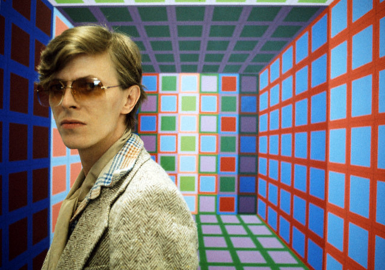
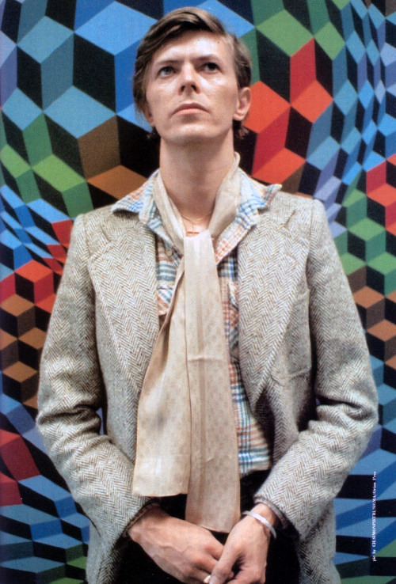
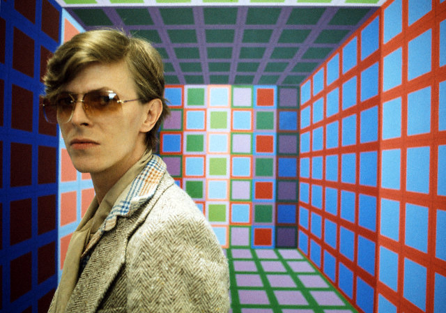
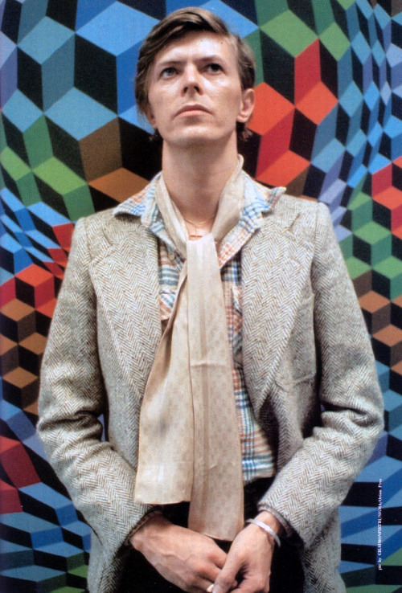

1977 - 1979
BOWIE IN BERLIN consists of studio albums:
Low(1977), "Heroes"(1977), Lodger(1979)
ABOUT
The trilogy originated following Bowie's move from Los Angeles to Europe with American singer Iggy Pop to rid themselves of worsening drug addiction. Influences included the German krautrock scene and the recent ambient releases of Eno.

SOUND + VISION SOUND + VISION
HISTORY
- 1976
- Came to Berlin to rejuvenile his mind
- 1977
- Low Château d'Hérouville
- 1977
- HeroesHansa Studios in West Berlin
- 1978
- Isolar 2 TourWorld Tour
- 1979
- LodgerMountain Studios in Montreux, Switzerland
 



INFLUENCED
IGGY POP
BRIAN ENO
LOU REED
TONY VISCONTI
WHAT THEY SAID
HIS MOTTO
Tomorrow belongs to those
who can here it coming.